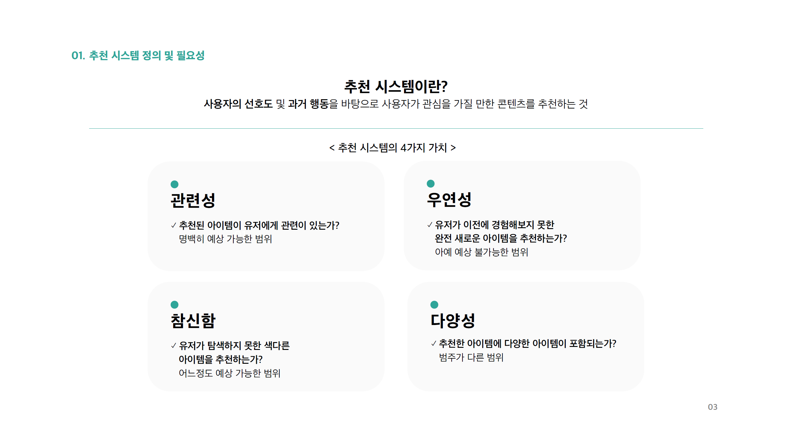

언론사별 추천 시스템 분석
- 분석 결과 :
- 검증 결과에 따르면 언론사 홈페이지별 개인화된 추천 시스템은 잘 작동하지 않는 것으로 보입니다.
- 부산일보, 중앙일보, 동아일보 홈페이지에서 사용자 선호도를 담은 로그인 변수를 통한 A/B테스트를 진행한 결과 개인화된 CF(협업필터링) 추천은 작동을 안하고 CB(콘텐츠베이스) 추천이 작동하는것으로 보였기 때문입니다.
- 저희는 이런 CF 미작동의 원인에 언론사 특유의 공익적 아젠다 세팅 문제, 사용자 데이터가 부족한 콜드 스타트 문제, 비즈니스적인 금전 인력 문제가 있을 수 있다고 판단했습니다.
